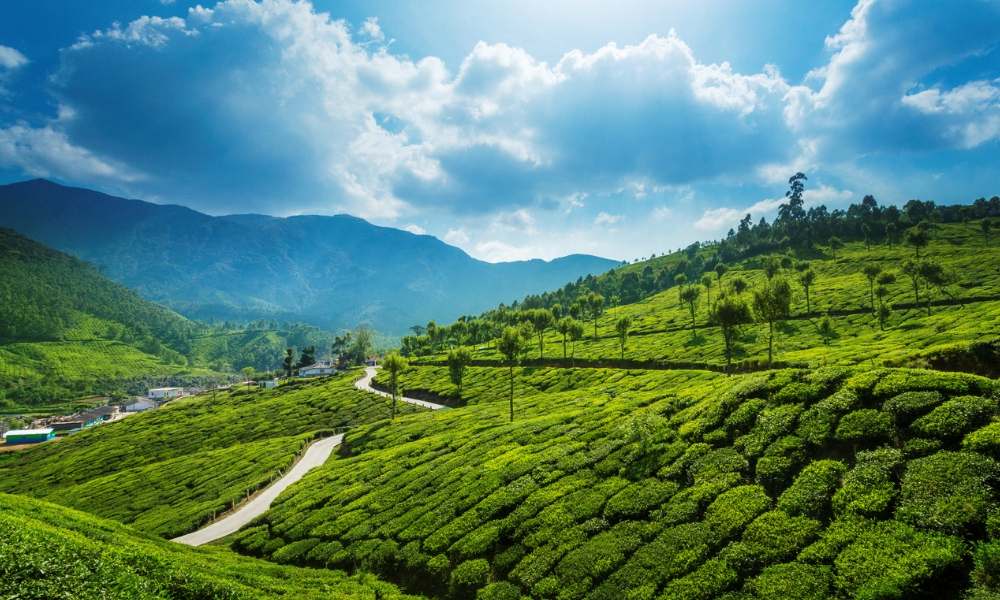
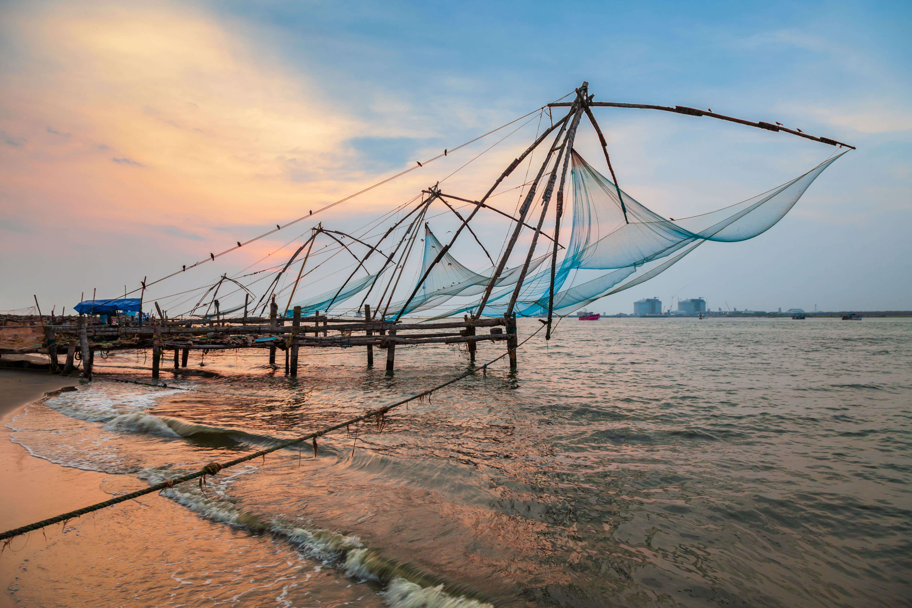
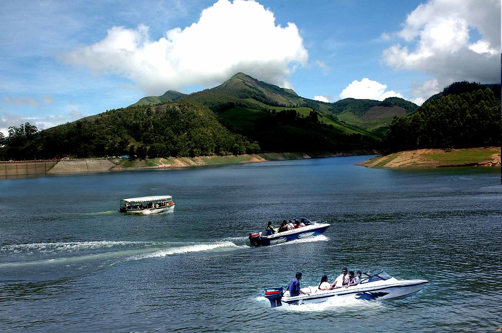

1. Alleppey
Alleppey also known as Alappuzha was given the tag ‘Venice of the East’ by Lord Curzon and the endless, fascinating backwaters
in alleppey dotted with green paddy fields and palm trees, make it the best backwater destination in Kerala. You can make a
houseboat stay the highlight of your trip and discover the charm of backwaters of Kerala with a leisurely cruise along its
canals. Explore local villages and see villagers going about their routine chores as you drift away on a serene journey.
Popular tourist attractions in Alleppey: Backwaters and Houseboats, Alappuzha Beach, Nehru Trophy Boat Race (Snake Boat Race)
in Punnamada Lake, Ambalapuzha Sree Krishna Temple, International Coir Museum, St. Mary’s Forane Church, Arthunkal Church,
Pathiramanal Island, Vembanad Lake, Marari Beach, Krishnapuram Palace, Kumarakom Bird Sanctuary, Karumadikkuttan and Mannarshala Temple

2. Munnar
Munnar is the most popular hill station in Kerala located in Idukki district and is is the most beautiful place to visit in Kerala.
Once the summer capital of the Britishers, Munnar is now famous for lush tea plantations and the tea museum. Experience endless,
sloping valleys of greenery and wake up to the smell of refreshing tea leaves during your stay in a tea estate in Munnar. It also
offers excitement for wildlife enthusiasts. Spotting elephants and the endangered mountain goat, Nilgiri tahr is common at the
Anamudi peak in Munnar. The Elephant Lake is another popular place in Munnar to find a herd of tuskers in a natural environment.
Popular tourist attractions in Munnar include: Kanan Devan Tea Museum, Tata Tea Museum, Kundala Lake, Nyayamakad, Meesapulimala,
Eravikulam National Park, Mattupetty Dam, Anamudi Peak, Pothamedu View Point, Blossom Park, Devikulam, Pallivasal, Kolukkumalai,
Chithirapuram, Rajamala and Top Station, Life of Pi Church, Vattavada, Attukal Waterfalls, Cheeyapara Waterfalls etc.

3. Kochi
Kochi or Cochin is also known as the ‘Queen of the Arabian Sea’ as it used to be an important trade center in ancient days.
Modern Kochi has retained the charms of the many cultures that influenced it – British, Arabian, Portugese and Chinese. It is
home to one of the oldest European churches in India, Saint Francis Church –which had the remains of Vasco Da Gama and modern
Kochi city has also won the UN Champions of the Earth award for an airport that is fully powered by Solar Energy. Popular tourist
attractions in Kochi: Fort Immanuel, Chinese Fishing Nets, Dutch Cemetery, David Hall, Vasco da Gama Square, Vasco House,
St. Francis Church, Basilica of Santa Cruz, Cherai Beach. Mattancherry Palace, Jew Town, Jewish Synagogue, Spice Market, Vypeen Beach,
Edappally Museum, Cochin Cultural Centre, Bolgatty Island, Muziris Heritage Project and Lulu Mall (one of the largest malls in India).

4. Thekkady
Thekkady is one of the best forest tourist places in Kerala and home to wildlife like elephants, bison, deer, Nilgiri
langurs and tigers. Cruise along the length of the lake in a tourist boat while sighting animals, birds and reptiles.
It is a great idea to keep a pair of binoculars handy to spot the unusual. The lush greenery of the forest and the calm
water can have a soothing effect on you. Thekkady also houses the Periyar National Park which is a tiger and elephant
reserve, where you can go on a jungle jeep safari. There are also treks along the Tiger Trail, bamboo rafting, camps and
midnight safaris organised for those who are looking for more adventure. Popular tourist attractions in Thekkady :
Periyar National Park, Periyar Tiger Trail, Bamboo Rafting, Border Hiking, Gavi Forest, Mangaladevi Temple, Deepa World Spice,
and Ayurvedic Garden, Peermedu, Mullaperiyar Dam, Elephant Junction, Pandikuzhi Waterfalls, Kadathanadan Kalari & Navarasa Kathakali
Centre, Vandanmedu Cardamom Hills and Vandiperiyar Spice Plantations.